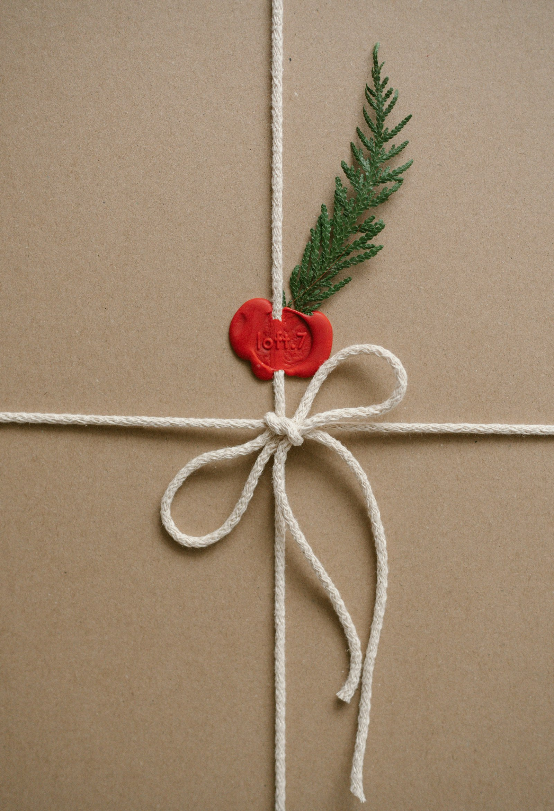

oikos
a practice in delhioikos is a small practice working out of delhi on biophilic interiors, conscious gifting, and quieter workplaces. we take on one room, one wedding, one studio at a time.
angelina and a handful of makers do most of the work by hand, with plants, paper, clay and wood sourced close to home.
begin a conversation
reply usually within two days
